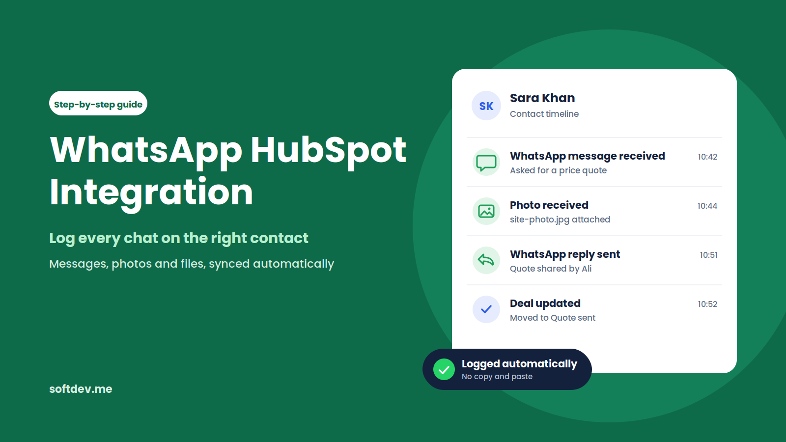
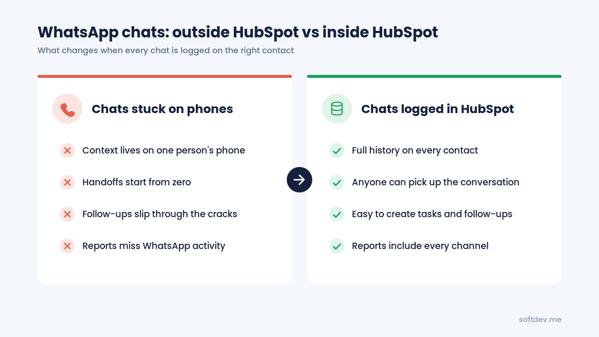
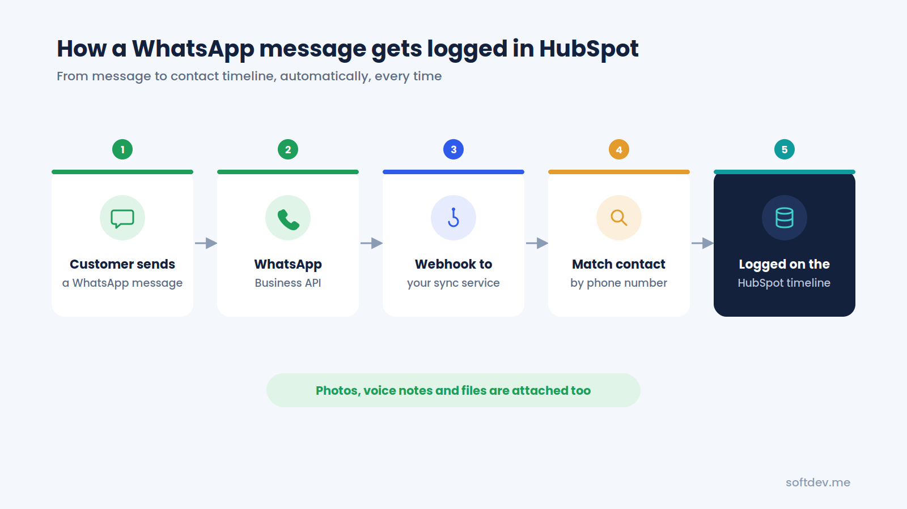
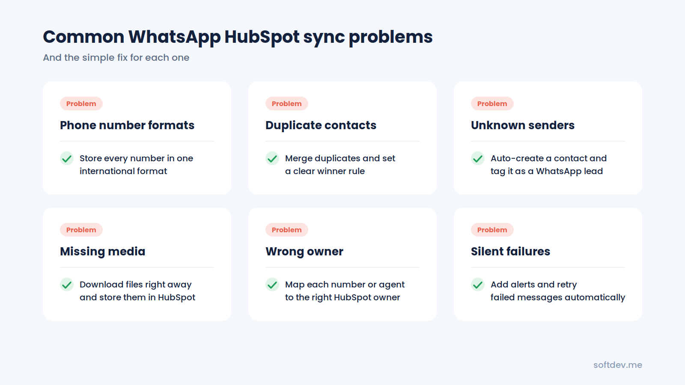
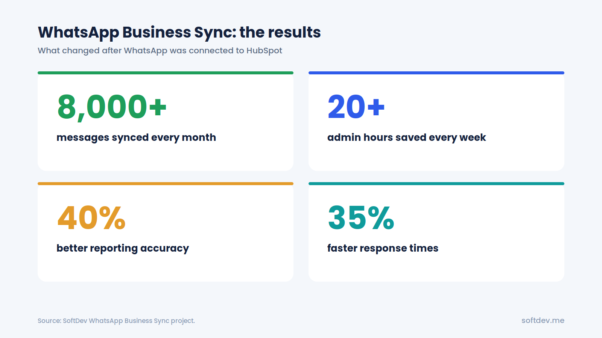

How to Automatically Log WhatsApp Business Conversations in HubSpot
A simple guide to WhatsApp HubSpot integration: your options, how an automatic sync works, and how to get every WhatsApp chat logged on the right contact.

TL;DR - 6 takeaways - 15-second read
- If your team talks to customers on WhatsApp, those chats should live in HubSpot, not on someone's phone.
- There are three ways to connect them: HubSpot's built-in WhatsApp channel, a marketplace app, or a custom sync using the WhatsApp Business API.
- The built-in option is great if you are on the right HubSpot plan and want to reply from HubSpot's inbox.
- A custom sync logs every message and media file as an activity on the right contact, with no manual work.
- The most common problems are phone number formats, duplicate contacts, and media files.
- Our WhatsApp Business Sync logs 8,000+ messages a month and saves the team 20+ admin hours every week.
Introduction
Your sales team closes a deal over WhatsApp. Your support team handles a customer complaint in the same chat app. Another customer sends a photo of a damaged product. But when someone checks HubSpot, none of these conversations are there.
Sound familiar?
This is a common problem for growing businesses. Customers use WhatsApp to communicate with your team, but your CRM doesn't automatically capture those conversations. As a result, employees end up copying messages into HubSpot, taking screenshots, or simply leaving the conversations unrecorded.
Over time, important details get lost, follow-ups are missed, and your reports don't reflect what's actually happening with your customers.
The good news is that you don't have to manage everything manually. There are several ways to connect WhatsApp with HubSpot, depending on your team's needs and the tools you already use.
In this guide, we'll walk through the three main integration options, explain how automatic message syncing works, and cover the common mistakes to watch out for. We'll also share how we built a system that syncs thousands of WhatsApp messages into HubSpot every month without requiring manual work from the team.
Why WhatsApp Conversations Belong in HubSpot
If your team only uses WhatsApp occasionally, keeping it separate from your CRM might not seem like a big deal.
But when WhatsApp becomes one of your main customer communication channels, things can quickly get complicated if those conversations stay on individual phones.
Here are some of the problems businesses commonly face.
Your team doesn't have the full picture.
Someone opens a contact in HubSpot and sees a couple of emails from a few months ago. What they can't see is the 40 WhatsApp messages another team member exchanged with that customer last week. Without that context, it's difficult to know what's already been discussed.
Handovers become difficult.
When an employee goes on leave or moves to another role, their WhatsApp conversations may stay on their phone. The next person has to start from scratch, and customers often end up repeating information they've already shared.
Important follow-ups get missed.
Imagine a potential customer asking for a quote on Friday evening. If nobody records the conversation or creates a follow-up task, that message can easily get buried under dozens of newer chats by Monday morning.
Your reports don't tell the whole story.
When WhatsApp conversations aren't recorded in HubSpot, your reports miss a significant part of your team's activity. You might not have an accurate picture of how customers interact with your business or which conversations lead to sales.
Manual data entry wastes time.
Copying messages, updating contact records, and uploading screenshots can quickly become tedious. Even if your team follows the process at first, it's difficult to keep everyone consistent over time.
The solution is to sync WhatsApp conversations with HubSpot automatically. Every message should be recorded against the correct contact, with relevant photos and files attached, without requiring someone to do it manually.

Three Ways to Connect WhatsApp to HubSpot
There's no single integration that works best for every business. The right choice depends on your HubSpot subscription, how your team communicates with customers, and how much control you need over the data.
Let's look at the three main options.
Option 1: Use HubSpot's Built-In WhatsApp Integration
HubSpot allows you to connect a WhatsApp Business Account to its conversations inbox. Once connected, your team can read and reply to WhatsApp messages directly from HubSpot.
Messages are linked to the relevant contact when the phone number matches the number saved in HubSpot.
Before choosing this option, there are a few things to consider:
- Subscription requirements: The built-in integration is available with Marketing Hub or Service Hub Professional and Enterprise.
- Business account required: You need a WhatsApp Business Account. A personal WhatsApp account can't be connected through the standard integration.
- Limited chat history: Only new messages sync after the connection is established. Existing conversations aren't imported through the standard setup.
- Changes to the WhatsApp app: Once connected through the standard integration, messages move into HubSpot and stop appearing in the WhatsApp app.
- Template message limit: There's a shared limit of 1,000 template messages per month.
If your team wants to keep using the WhatsApp Business app on its phones, HubSpot also offers a setup called coexistence.
This allows the same number to work with both HubSpot and the WhatsApp Business app. It can also import the previous 180 days of chat history, although older media files may appear as placeholders rather than complete files.
You can find the setup details in the HubSpot Knowledge Base.
Option 2: Use a Third-Party Marketplace App
Another option is to install a WhatsApp integration from the HubSpot App Marketplace.
These apps connect WhatsApp with HubSpot and can make it easier to get messages into your CRM without building a custom solution.
Some use the official WhatsApp Business API, while others connect through a phone using a QR code or browser extension.
The main advantage is convenience. Many apps are relatively quick to set up and require little development work.
However, there are a few trade-offs:
- Most charge a monthly fee per user or phone number.
- Available features depend on the app you choose.
- Contact matching and message logging may work differently across providers.
- Media handling and reporting capabilities can vary.
This option can work well for smaller teams that need a straightforward integration and don't require much customization.
Option 3: Build a Custom WhatsApp-to-HubSpot Sync
For businesses that need more control, a custom integration is another option. This is the approach we typically build for clients with specific CRM requirements.
The system uses the official WhatsApp Business API to receive messages and send them to a service that connects with HubSpot.
That service identifies the relevant contact and records the message as an activity in HubSpot. Photos, documents, and other supported media can also be downloaded and attached to the relevant record.
The biggest advantage is flexibility. You can decide how contacts are matched, how messages are recorded, how ownership is assigned, and how the data appears in your reports.
You can also build rules for handling unknown senders, duplicate contacts, multiple WhatsApp numbers, and other situations that standard integrations may not cover in the way you need.
A custom integration takes more development work than installing an app, but it gives you greater control over the entire process. It can work with a range of HubSpot plans, provided the necessary API access and features are available.
Quick Comparison
| Feature | Built-In Integration | Marketplace App | Custom API Sync |
|---|---|---|---|
| HubSpot plan | Marketing or Service Hub Pro or Enterprise | Depends on the app | Works with many plans, depending on API access |
| Reply from HubSpot | Yes | Usually | Optional |
| Media and file handling | Supported | Depends on the app | Can be customized |
| Contact matching | Based on phone number matching | Depends on the app | Custom rules |
| Ongoing cost | Included in the eligible plan | Usually a monthly fee | Hosting and maintenance |
| Setup time | Often under an hour | Often under an hour | A few days to several weeks |
| Best for | Teams that want one shared inbox | Teams looking for a quick solution | Businesses that need reliable logging and more control |
How Automatic WhatsApp-to-HubSpot Syncing Works
A custom integration might sound complicated, but the basic process is fairly straightforward.
Whenever a WhatsApp message is sent or received, the system processes it and records it in HubSpot.
Here's how it works.
1. WhatsApp Business API receives the message.
The official WhatsApp Business API handles communication through your business number.
2. A webhook sends the message details to your system.
When a message arrives, Meta sends the relevant information to your webhook. This may include the message text, sender's phone number, timestamp, and media information.
You can build the service using tools such as n8n or Make, or develop it using Python.
3. The system finds the right contact.
Before saving the message, the integration searches HubSpot for a contact with the matching phone number.
It should also standardize phone numbers to avoid mismatches caused by different formats. If no contact exists, you can configure the system to create one automatically.
4. The message is recorded in HubSpot.
The integration creates a communication record and associates it with the correct contact. Depending on your requirements, the message can also be associated with a company or deal.
Photos and other supported files can be attached to the record so your team can access them from the contact's timeline.
HubSpot provides a Communications API for recording messages on CRM records. It supports communication types including WhatsApp, LinkedIn, and SMS, allowing WhatsApp messages to appear as structured activities rather than generic notes.
You can learn more in the HubSpot Developers documentation.

Step-by-Step: Setting Up the Integration
When building a custom WhatsApp-to-HubSpot integration, we generally follow these steps.
Step 1: Set Up the WhatsApp Business API
Start by creating or connecting a WhatsApp Business Account through Meta Business Manager.
Register the phone number your business uses to communicate with customers and complete the required setup.
It's worth looking into business verification early, as unverified accounts may have more restrictive messaging limits.
Step 2: Create a HubSpot Private App
Next, create a private app in HubSpot and configure the permissions it needs.
Depending on your implementation, these may include access to contacts, communications, and files.
The app provides an authentication token that your integration can use to communicate securely with HubSpot's APIs. Store this token securely and avoid exposing it in logs or client-side code.
Step 3: Configure the Webhook
Configure your WhatsApp webhook to send message events to your integration service.
Once everything is connected, incoming messages can be processed as they arrive.
If your team also sends messages through the WhatsApp API, your system can record those outgoing messages as well. The exact implementation depends on how your team sends replies and how your integration handles message events.
Step 4: Match Each Message to the Correct Contact
Contact matching is one of the most important parts of the integration.
For example, WhatsApp might provide a number in international format, such as +923001234567, while the same contact is saved in HubSpot as 0300-1234567.
Even though these numbers refer to the same person, a simple comparison might not recognize the match.
Standardize phone numbers before searching HubSpot's phone and mobile phone fields.
You should also decide what happens when a number matches multiple contacts or when a message comes from someone who isn't in your CRM.
These rules help prevent messages from being attached to the wrong records.
Step 5: Log Messages in HubSpot
Once the correct contact has been identified, create a communication record in HubSpot.
Depending on your requirements, the record should include:
- The message text.
- The time the message was sent or received.
- Whether it was an incoming or outgoing message.
- The relevant contact and message details.
- The appropriate owner, where applicable.
You can also associate the communication with a company or an open deal if that information is useful to your team.
The goal is to make the conversation easy to find without forcing employees to leave HubSpot to check what happened.
Step 6: Handle Photos, Voice Notes, and Documents
Messages aren't always text. Customers may send product photos, voice notes, invoices, screenshots, or other documents.
Your integration should handle supported media separately from the message text.
A typical process involves downloading the media from WhatsApp, uploading it to HubSpot's file manager, and linking the uploaded file to the relevant communication record.
This allows team members to access the original attachment from the customer's timeline.
Make sure the integration handles expired media links and failed downloads properly, rather than silently leaving attachments missing.
Step 7: Test the Integration and Monitor It
Before putting the integration into production, test it with several phone numbers and message types.
Check that:
- Messages appear on the correct contact records.
- Incoming and outgoing messages are recorded correctly.
- Phone numbers in different formats are handled properly.
- Photos and documents can be opened.
- Unknown senders are handled as expected.
- Duplicate contacts don't cause messages to be misassigned.
It's also important to monitor the integration after launch.
Set up alerts for failed requests, add retries for temporary errors, and keep enough logging to identify problems without exposing sensitive customer information.
A working integration isn't just one that runs successfully during testing. It should continue working reliably as your team and message volume grow.
Common Problems and How to Fix Them
Most integration issues come down to data quality, missing edge cases, or failures that go unnoticed.
Here are some common problems and how to address them.
| Problem | What Happens | How to Fix It |
|---|---|---|
| Inconsistent phone numbers | A number such as +923001234567 doesn't match 0300-1234567 in HubSpot. | Standardize phone numbers and clean up existing records. |
| Duplicate contacts | Multiple contacts share the same phone number, making it unclear where a message belongs. | Merge duplicates where appropriate and establish clear matching rules. |
| Unknown senders | A new lead sends a message, but no matching contact exists. | Create a new contact automatically and tag it as a WhatsApp lead. |
| Missing media | Photos or voice notes aren't accessible from HubSpot. | Download the media promptly, upload it to HubSpot, and link it to the communication record. |
| Incorrect ownership | Messages appear under one administrator instead of the relevant team member. | Map WhatsApp numbers or agents to the appropriate HubSpot owners. |
| Silent failures | The sync stops working, but nobody notices until much later. | Set up email or Slack alerts and retry failed messages automatically. |
| Missing chat history | Older conversations don't appear in HubSpot. | Determine whether a one-time historical import is needed. |
HubSpot's built-in WhatsApp integration also relies on phone number matching. If a contact's phone number doesn't match the number associated with the WhatsApp conversation, the chat may appear as an unknown visitor instead of being linked to the correct record.
This is why cleaning up phone number data before launching an integration can save a lot of trouble later.

Real Example: Our WhatsApp Business Sync
We worked with a client whose sales and support teams communicated with customers through WhatsApp throughout the day.
The company already used HubSpot as its CRM, but WhatsApp conversations weren't being recorded automatically. Team members had to log messages manually when they remembered, and managers couldn't get a complete view of customer interactions.
We connected the client's WhatsApp Business API to HubSpot through Meta and built a system that captures messages and media files as they arrive.
Each conversation is converted into a structured communication activity and associated with the appropriate contact record.
You can learn more about the project on our WhatsApp Business Sync project page.
Here are the results reported for the project:
| Result | What It Means |
|---|---|
| 8,000+ messages synced every month | WhatsApp messages and files are recorded on HubSpot contact timelines automatically. |
| 20+ administrative hours saved every week | Team members no longer need to copy conversations into HubSpot by hand. |
| 40% improvement in reporting accuracy | Reports include WhatsApp activity as structured data. |
| 35% faster response times | Sales and support teams can review previous conversations before responding. |

The biggest improvement wasn't just the time saved. It was having the full customer history available in one place.
Instead of switching between phones and HubSpot, team members could open a contact record and see the conversations that mattered, including WhatsApp messages and their attachments.
We've also built integrations for other communication channels, including our Telegram Bot Integration, which sends Telegram messages to HubSpot, and our RingCentral HubSpot Integration, which records SMS messages and calls.
Which Integration Should You Choose?
The best option depends on how your team works and what you need from your CRM.
Here's a simple way to decide.
Choose HubSpot's built-in integration if you already have an eligible Marketing Hub or Service Hub Professional or Enterprise subscription and want your team to manage WhatsApp conversations directly from HubSpot.
Choose a marketplace app if you need something quick to set up and can find an app that supports your required features, contact matching, and media handling.
Choose a custom integration if you need more control over how messages are logged, how contacts are matched, how ownership is assigned, or how WhatsApp activity appears in your reports. It's also worth considering if your business uses multiple WhatsApp numbers or has more complex workflows.
If you're unsure which option makes the most sense, start with three questions:
- Which HubSpot plan does your business use?
- How many WhatsApp numbers does your team work with?
- What information do you need to see on each contact's record?
Your answers will help narrow down the options and make it easier to choose an integration that fits your workflow.
Conclusion
WhatsApp has become an important communication channel for many businesses. But when conversations stay on individual phones instead of being recorded in your CRM, your team can lose valuable context, miss follow-ups, and struggle to maintain accurate reports.
Connecting WhatsApp to HubSpot helps solve this problem by bringing customer conversations into one place.
You can use HubSpot's built-in integration, install a third-party app, or build a custom sync using the WhatsApp Business API and HubSpot's APIs.
Each option has its advantages, but the goal is the same: make sure important customer conversations are recorded accurately without adding more manual work for your team.
Pay particular attention to phone number matching, media handling, duplicate contacts, and error monitoring. Getting these details right will help you build an integration that your team can rely on as your business grows.
Frequently Asked Questions
Can I connect my personal WhatsApp account to HubSpot?
HubSpot's standard WhatsApp integration requires a WhatsApp Business Account, so it doesn't connect directly to a personal WhatsApp account.
Some third-party tools support regular WhatsApp numbers, but their capabilities and connection methods vary. For a business that needs a reliable, long-term integration, the official WhatsApp Business API is generally the better option.
Will my old WhatsApp conversations appear in HubSpot?
With HubSpot's standard WhatsApp integration, only new messages sync after you connect the account.
The coexistence setup can import the previous 180 days of chat history. A custom integration may also support a one-time import of older conversations, depending on the available data and the requirements of the project.
Do I need a paid HubSpot plan?
HubSpot's built-in WhatsApp integration requires Marketing Hub or Service Hub Professional or Enterprise.
A custom integration may work with other HubSpot plans, depending on the APIs and features required. Check the relevant API permissions and subscription limitations before choosing your setup.
Can WhatsApp photos and voice notes be saved in HubSpot?
Yes, provided your integration is designed to handle media files.
A custom sync can download supported attachments, upload them to HubSpot's file manager, and associate them with the relevant communication record. This allows your team to access the files from the customer's timeline.
How long does it take to build a custom integration?
A basic integration can often be set up in a few days.
More complex projects may take one to three weeks, particularly when they involve multiple WhatsApp numbers, custom contact-matching rules, deal associations, media handling, or importing historical conversations.
The actual timeline depends on the requirements, existing systems, and testing needed before launch.